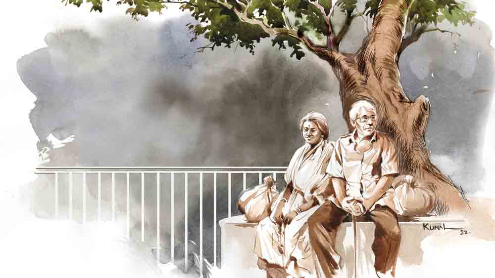

তেঁতুলের আচার
বিতান সিকদার
এমবিএ হল গঙ্গাজল। যে বিষয় নিয়েই লেখাপড়া করা হোক না কেন, ওপরে একটু এমবিএ ছিটোতে হবে। ব্যস, শিক্ষা শুদ্ধ হল! জগৎ এখন বেনিয়াদের। বাজার অর্থনীতি। সেই বাজার চালায় ম্যানেজমেন্ট। তুমি ম্যানেজ করতে পারলে তো মার দিয়া কেল্লা। আর না পারলে, ভোগে গেল জেল্লা!
এখন প্রশ্ন হচ্ছে, এই এমবিএ-র জোরেই কি শিরদাঁড়া শক্ত করে পাঁচ লাখ টাকার কোম্পানিকে অগ্রদূত বসাক বত্রিশ কোটিতে নিয়ে গেছে? না কি বিদ্যা, শিক্ষা, ধৈর্য, অধ্যবসায়, পরিশ্রমেরও অনেকটাই ভূমিকা ছিল? মুশকিল হল, এমবিএ শব্দটা অগ্রদূতের মাথায় এঁটুলির মতো লেগে রয়েছে, যখন থেকে সে তার অ্যাপার্টমেন্টের সিকিয়োরিটির ফোনটা পেয়েছে “স্যর, সদাশিব দাস আর অভয়া দাস বলে দু’জন আপনার সঙ্গে দেখা করতে চাইছেন।”
অগ্রদূত তার গাড়ির পিছনের সিটে হেলান দিয়ে তত ক্ষণে অফিসের উদ্দেশে রওনা দিয়ে দিয়েছিল। “শনিবার, শনিবার” বলে ফোনটা নিমেষে কেটে দেয় সে। সাড়ে এগারোটায় রুশ ডেলিগেটদের সঙ্গে মিটিং। এখন কোনও অচেনা দাস দম্পতি নিয়ে…
পাশে বসে ইনোভেটিভ ইনফোভিশনের এমডি সুশান্ত চট্টরাজ কোলের ওপর ট্যাবটা খুলে সমস্ত নথি এক বার মিলিয়ে নিচ্ছে। অগ্রদূত শুনতে পাচ্ছে শুধু বিড়বিড়ানি— “টুয়েল্ভ টার্ন ওভার… ডেট… মার্কেট প্রাইস… নিট গেন…লার্জ ক্যাপ!”
কলকাতার যান্ত্রিক দূষণের মধ্যে দিয়ে কালো মার্সিডিজ় এমন এক গন্তব্যের দিকে এগোচ্ছে, যেখানে কোনও একটা ডিল আজ ফাইনাল হলে আট মাসের মধ্যে বত্রিশ কোটির বত্রিশটা তিন অঙ্কের ঘরে চলে যাওয়ার কথা।
আজ প্রচণ্ড গুমোট।
ঝাঁ-চকচকে অফিস ফ্লোরটাতে ঢুকে অগ্রদূতের আবারও মনে হল— এমবিএ। পশ ইনটিরিয়র। ঝকঝকে এক ঝাঁক তরুণ-তরুণী। সবাই ড্রিমার, সিনসিয়ার এবং অ্যাপারেন্টলি লিডিং গুড লাইভস। এই হচ্ছে এমবিএ। এর পালিশই আলাদা।
ছেলে-মেয়ে, যুবক-যুবতী, তরুণ-তরুণী… প্রৌঢ়-প্রৌঢ়া— এমনই কিছু শব্দ তার মাথায় খেলা করে। আর তার পরই হঠাৎ মনে হয় অগ্রদূতের, আচ্ছা, সদাশিব দাস আর অভয়া দাস যে ‘দম্পতি’, সেটা সে আন্দাজ করল কী করে? তারা যে প্রৌঢ়-প্রৌঢ়া, সেটাই বা ধরে নিল কী করে?
“স্যর,” সুশান্ত দরজাটা খুলে মুখটা ঢুকিয়ে বলে, “পাওয়ার পয়েন্ট প্রেজ়েন্টেশন ইন ফাইভ মিনিটস, ডামি রান!”
অগ্রদূত চেম্বার থেকে বেরিয়ে আসে। তার পর কনফারেন্স রুমের দিকে যেতে যেতে শুনতে পায়, দাশগুপ্ত কফি ভেন্ডিং মেশিনটার সামনে দাঁড়িয়ে টাই ঠিক করতে থাকা শান্তনুকে বলছে, “ইনভেস্টেড ক্যাপিটাল দু’বছরে বাজার থেকে রিয়্যালাইজ় করে নেব।”
ইনভেস্টেড… ক্যাপিটাল… উঠে আসবে… আরও কয়েকটা শব্দ— সদাশিব দাস…অভয়া দাস…
শিবুকাকা আর কাকিমণি…এমবিএ— কথাগুলো বিদ্যুৎগতিতে অগ্রদূতের মাথার মধ্যে পর পর লাইন করে এসে থমকে দাঁড়ায়— ধাক্কাটা নিতে পারে না অগ্রদূত। একটা চেয়ারে বসে পড়ে সে।
তার কানে যেন ভেসে আসে বহু বছর আগেকার কয়েকটা কথা— “যখন চাকরি পাবে, তখন দেখবে, নিমেষে এ টাকা উঠে আসবে।”
মাথার মধ্যে আরও কিছু শব্দ— ধানখেত… আমবাগান… কালীদিঘি… পিকচার পোস্টকার্ড সানসেট… শুক্রবারের হাট… চড়কের মেলা… মইদুল মিঞার ভ্যান… কলু মোদক… বিটলে বিলু… রহিম ক্ষ্যাপা… তাদের… তাদের নিম্ন-মধ্যবিত্ত একটা পরিবার… আর… আর…অনেকটা অক্সিজেন! বিরামপুর— তার দেশ—তাদের বাড়ি। আর তাদের প্রতিবেশী— সদাশিব দাস, অভয়া দাস। মানে, শিবুকাকা আর কাকিমণি। মনে পড়ছে…
সেই দুটো লোক যারা নিজের ছেলের মতো দেখতেন অগ্রদূতকে…
“বস, ইউ ওকে?”
সেই দুটো লোক, যারা অগ্রদূতের ভাল রেজ়াল্টে তার নিজের বাবা-মা’র থেকেও বেশি খুশি হতেন।
“বস, বস…”
সেই দুটো লোক যারা… যারা জোর করে অগ্রদূতের মা-র হাতে তার এমবিএ পড়ার টাকাটা তুলে দিয়েছিলেন, “ভেবো না তো বৌদি। টাকার জন্য বুবাইয়ের পড়াশোনা… এ টাকা চাকরি পেলে নিমেষে…”
আচমকাই আশপাশ দেখে সচেতন হয়ে ওঠে অগ্রদূত। আস্তে করে উঠে দাঁড়ায়। তার পর ধীর পায়ে কনফারেন্স রুমের দিকে এগিয়ে যায়।
ধীর ভাবটা কাটতে লাগে কয়েক মিনিট। অস্থির ভাবটা আসে তার পর। ওই ‘সদাশিব দাস আর অভয়া দাস’ শুনেই সে চিনতে পারেনি। তারা এসেছিলেন দেখা করতে। সিকিয়োরিটি বলেনি যে শিবুকাকা আর কাকিমণি এসেছেন। আর অগ্রদূত বলেছে, “শনিবার, শনিবার!”
চল্লিশ মিনিটের প্রেজ়েন্টেশন চলাকালীন অগ্রদূত শুধুমাত্র আঙুল মটকে গেল। তার পর নিজের চেম্বারে ফিরে অস্থির ভাবে পায়চারি করল কিছু ক্ষণ। মনে পড়ছে সব... ওই টাকাটা ফেরত দিতে গেলে কাকিমণি অগ্রদূতের বাবাকে বলেছিলেন, “দাদা, আজ অন্তুর প্রয়োজনে আপনি পাশে দাঁড়ালে আমি এ ভাবে আপনার সাহায্য শোধ করে দিতে পারতাম?”
অন্তু— অনন্ত। কাকিমণির ছেলে। সে কী করে এখন?
মেহগিনি টেবিলে রাখা কফি ঠান্ডা হয়ে গেছে। বাইরে মেঘ ডাকছে।
অগ্রদূতের মা পরদিন কাকিমণির বাড়ি গিয়ে বলেছিলেন, “এ তোমায় ফেরত নিতেই হবে…”
কাকিমণি বলেছিলেন, “আমার ছেলেকে আমি দিয়েছি, তুমি ফেরত দেওয়ার কে?”
অনেক দিন অগ্রদূতের মনের মধ্যে ব্যাপারটা বিঁধে ছিল। তাকে পড়ানোর জন্য এতগুলো টাকা অক্লেশে এক জন…
কিন্তু… সেই এমবিএ। সেই কনফিডেন্স। প্রথম চাকরিতে সেই উন্নতি। তার পর নিজের কিছু ভাবনা। পাঁচ লাখ পুঁজি। ইনোভেটিভ ইনফোভিশন। ন’বছরে বত্রিশ কোটি। হপ, স্কিপ, জাম্প!
আর এই ঠেলাটা যাঁরা দিয়েছিলেন, তাঁদের জন্য সকালে অগ্রদূত দুটো মাত্র শব্দ খরচ করেছে— “শনিবার, শনিবার”!
এগারোটা নাগাদ আর পারা গেল না। সুশান্তকে ডেকে সে বলল, “কোনও ভাবে আমাকে ছাড়া আজ ম্যানেজ দিতে পারবে?” অগ্রদূত তখন চরম অস্থির! সুশান্ত থ!
“পারবে?”
কয়েক মুহূর্ত চুপ করে থেকে এমডি বলল, “এনি ট্রাবল? ইমারজেন্সি?”
“হ্যাঁ।”
“মে আই শেয়ার?”
“সময় লাগবে। পরে বলব।”
“বাট…”
“ড্যাম ইট সুশান্ত!” গর্জে ওঠে কোম্পানির সিইও অগ্রদূত বসাক, “ইউ আর দ্য এমডি অব দিস কোম্পানি।”
ভাবাবেগ নিয়ন্ত্রণে বরাবর দক্ষ অগ্রদূত হঠাৎ কেন এমন করে… জানা যায় না। তিরের বেগে নীচে নেমে গাড়িতে বসে ফোন লাগায় সে সিকিয়োরিটিকে, “তাঁরা কোথায় গেছেন, কিছু বলে গেছেন?”
“না তো স্যর…”
“জিজ্ঞেস করিসনি কেন ইডিয়ট? ফোন নম্বর কিছু…”
“না স্যর…”
ফোন কেটে অগ্রদূত মা-কে ফোন করে। আভা শুনে বলেন, “হ্যাঁ, আমার কাছ থেকেই তো ঠিকানা নিল।”
“ওদের কোনও নম্বর আছে মা?”
“আছে। তবে জম্মে লাগে না।”
লাগলও না। আবারও আভাকে ফোন, “ওরা এখান থেকে কোথায় যাবে, কিছু বলেছিল?”
“আরে অন্তুর রিপোর্ট নিয়ে ডাক্তারের সঙ্গে কথা বলতে গেল, তাই তো জানি। বলল, কত বছর তোকে দেখেনি, ঠিকানাটা চাইল।”
“অন্তুর রিপোর্ট... ডাক্তার?”
“ছেলেটার বুকের ব্যামো। অনেক দিন শয্যাশায়ী। এদেরও অবস্থা আগের মতো নেই। কোন জ্ঞাতি নাকি সব গাপ করে বসে আছে। জলের মতো টাকা গেছে… তবে, শিয়ালদাতে কী ভবতারিণী লজ না কী— সেখানে বোধহয় উঠবে বলেছিল।”
ফোন কেটে নিমেষে ইয়াসিনকে হুকুম করে অগ্রদূত, “শিয়ালদা! উড়িয়ে চল।”
গাড়ির কাচের বাইরে কলকাতার দৃশ্য ধূসর হয়ে আসে।
আকাশ কালো।
সম্পন্ন গৃহস্থ ছিলেন কাকিমণিরা। তাঁদের চালের ব্যবসা ছিল। তার জন্য আচার বানিয়ে রাখতেন। ইস্কুলে যাওয়ার সময় রোজ লুকিয়ে পকেটখরচা দিতেন। আর অগ্রদূতের রেজ়াল্ট ভাল হলে পাড়ার লোককে ডেকে মিষ্টি খাওয়াতেন।
বাবা-মা এখনও বিরামপুরেই থাকেন। তাঁদের বাড়ি এখন বাংলো। অদূরেই ছিল শিবুকাকুদের দোতলা বাড়ি। অন্তু অসুস্থ? কী হয়েছে?
নিমেষে একটা চিন্তা খেলে যায় তার। এই তো পরিস্থিতি এসেছে! টাকাটা… আজ টাকাটা যদি এ ভাবে ফেরত দেওয়া যায়? উসখুস করে অগ্রদূত। ব্যাগ হাতড়ে চেকবইটা বার করে সে। তার পর একটা অনেকগুলো শূন্য দেওয়া সংখ্যা লিখে নীচে সই করে পাতাটা ছিঁড়ে বুকপকেটে ভরে পিছনের সিটে মাথাটা এলিয়ে দেয়।
শিয়ালদার ভবতারিণী লজে ম্যানেজার নিকুঞ্জ বটব্যাল খাতা উল্টে বললেন, “হ্যাঁ, ছিলেন। চলে গেছেন। ও বেলায় ট্রেন শুনেছিলাম যেন…”
পরের আধ ঘণ্টা শিয়ালদা স্টেশনের প্ল্যাটফর্মে দৌড়ে বেড়ায় অগ্রদূত। ভিড়ে খুব চেনা দুটো মুখ খুঁজে ফেরে।
এমন নয় যে, তাদের যোগাযোগ একেবারেই নেই। সে আগে কখনও গ্রামে গেলে ও বাড়ি গিয়েছে। তাঁরাও তার আগের ফ্ল্যাটে বার দুয়েক এসেছেন। কিন্তু এ বারেরটা প্রায়…হ্যাঁ, তা বছর আষ্টেক পর তো হবেই। এই সময়টার মধ্যে বিরামপুর গেলেও কোনও না কোনও কাজে দেখা করা হয়ে ওঠেনি। তাঁরাও আর…
আর আজ তারই দোরগোড়ায় দাঁড়িয়ে থাকা তাঁদের জন্য সে মাত্র দুটো শব্দ খরচ করল, “শনিবার, শনিবার।” শনিবার বাইরের বিভিন্ন লোকের সঙ্গে দেখা করে অগ্রদূত। অনেকে অনেক আর্জি নিয়ে আসে। অনেকে অনেক কিছু চায়ও।
ঘণ্টাখানেক পর ময়দানের পাশে গাড়ি দাঁড় করিয়ে বিষণ্ণ মনে ফাঁকা মাঠটার দিকে তাকিয়ে থাকে হতাশ অগ্রদূত। মেঘ ডাকে আকাশে।
আর… তারও ঘণ্টাদেড়েক পর নিজের অ্যাপার্টমেন্টে ফিরে গাড়ি থেকে নেমে সে দেখতে পায়, কম্পাউন্ডের বাইরে একটা গাছতলার নীচে বাঁধানো চাতালে দুটো লোক কিছু লোটাকম্বল নিয়ে বসে আছে।
“কত রোগা হয়ে গেছিস বাবু তুই!” অভয়া অগ্রদূতকে জড়িয়ে হাউহাউ করে কাঁদছেন।
শিবুকাকুর চেহারাটা ক্ষয়ে গেছে। সেই জামার নীচের বোতাম দুটো খোলা। সেই ইস্তিরি না করা সস্তার প্যান্ট। শুধু মুখ-ভর্তি আলো। হেসে বলছেন, “একটু জল দে।”
অগ্রদূত দৌড়ে ফ্রিজের জল এনে দেয়। এক ঢোক খেয়ে চার পাশ দেখে বলেন, “কী সুন্দর ফ্ল্যাট তোর…”
কয়েক মুহূর্ত যায়। অগ্রদূত ভেবে উঠতে পারে না কোথায় বসাবে এঁদের। অভয়া বলেন, “ঘরটা এমন ঠান্ডা কেন রে বুবাই?”
অগ্রদূত নিমেষে এসি বন্ধ করে জানলা খুলে দেয়। হাওয়া ঢুকে আসে তোড়ে। ঝড় উঠল?
অভয়া নাক টানছেন, “এক বারও মনে পড়ল না?”
মনে পড়বে না, তা-ই হয়? অগ্রদূতের বুকটা খালি-খালি লাগছে। মনে পড়ছে একটু আগেই মা ফোনে বলছিলেন, এখনও অভয়া বলে বেড়ান, “আমার এক ছেলে কলকাতায় থাকে। বড় চাকরি করে।”
সদাশিব সামাল দেন, “আরে লোকের কাজ-কারবারও তো থাকে না কি?”
অভয়া অভিমানে মুখ ফোলান। তার পর লোটাকম্বল থেকে একে একে বার করেন, বয়াম-ভর্তি খোয়া ক্ষীর, শিশি-ভর্তি ঘি, একটা পুরনো টিফিনবক্স-ভর্তি তেঁতুলের আচার, “তোর খুব প্রিয় ছিল। মনে পড়ে?”
কথার পর কথা বলে যান মহিলা। তাল দিয়ে চলেন সদাশিব।
বার করেন বড় ঠোঙাভর্তি খেতের ঢেঁকিছাঁটা চাল, বাজার থেকে কিনেছেন হরেক রকমের ফল। হতবাক অগ্রদূত দেখতে থাকে বোঁচকা আস্তে আস্তে খালি হয়ে আসছে শুধু তার জন্য আনা জিনিস বার করতে করতে।
অস্থির অগ্রদূত সুযোগ খোঁজে কখন চেকটা বার করবে… জিজ্ঞেস করে, “অন্তু কেমন আছে, কাকিমণি?”
অভয়া বোবা মেরে যান। সদাশিব সামলে নেন, “ভালই! আরে বাবা, ওর জামাটা বার করো।”
ব্যাগ থেকে দু’জোড়া দামি ব্র্যান্ডের জামাপ্যান্টের পিস বেরোয়।
কাজের লোককে দিয়ে তড়িঘড়ি রান্না বসায় অগ্রদূত। সব মিটতে প্রায় সাড়ে তিনটে বেজে যায়। কত কথা…কত কত কথা…
আর এই পুরো সময়টা ধরে অগ্রদূতের পকেটে চেকের দামটা কমতে থাকে। তবু দিতে হবে। যে ভাবেই হোক, দিতেই হবে। অন্তুর অসুখ যে। কিন্তু কী ভাবে দেবে সে?
এক সময় হাতের কাচ-ভাঙা ডায়ালের ঘড়িটা দেখে সদাশিব বলে ওঠেন, “হ্যাঁ রে, এখান থেকে শিয়ালদার অটো…”
কথাটা কানে তোলে না অগ্রদূত। শুধু বলতে থাকে, “আজকের দিনটা, অন্তত আজকের দিনটা থেকে যাও…”
দু’জনেই অভিনয় করেন, “তার কি জো আছে? ও দিকে গুচ্ছের কাজ পড়ে আছে...”
বিল্ডিং-এর নীচে নামে তারা। ইয়াসিনকে বলে অগ্রদূত, “ট্রেনে তুলে লাগেজ রেখে ট্রেন ছাড়লে তবে ওখান থেকে ফিরবে।”
এখন চেকটা দিতে পারল না সে। কিন্তু…কিন্তু…
গাড়িতে ওঠার আগে অগ্রদূতকে জড়িয়ে ধরেন অভয়া। আবারও হাউহাউ করে চোখের জল ফেলেন! অথচ অগ্রদূতের কান্নাটা বুক থেকে চোখ অবধি উঠতে পারে না।
সদাশিব তার দিকে এগিয়ে আসেন। তার পর হেসে বলেন, “দ্যাখ দিকি, ভুলেই যাচ্ছিলাম একেবারে।”
পুরনো ছেঁড়া একটা মানিব্যাগ বার করেন প্রৌঢ়। তার পর তার থেকে দুটো পাঁচশো টাকার নোট বের করে অগ্রদূতের হাতে গুঁজে দেন। কাঁপা গলায় বলেন, “কিছু কিনে খাস!”
অগ্রদূত আমতা আমতা করে… ইতস্তত! সদাশিব তার মাথায় হাত বুলিয়ে বলেন, “মনে আছে, ছোটবেলায় আমার কাছ থেকে টাকা নিয়ে আইসক্রিম খেতিস…”
গাড়িটা চলে যায়। আর… বৃষ্টিটা তখনই নামে।
নোট দুটো দু’হাতের মুঠোয় চেপে ধরে স্থির হয়ে দাঁড়িয়ে অঝোরে ভিজতে থাকে অগ্রদূত। বৃষ্টির জলে। চোখের জলেও।